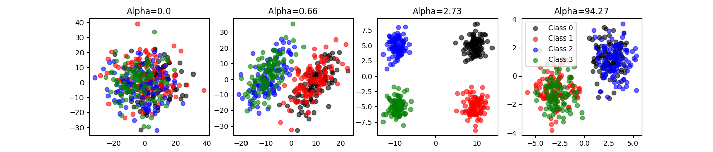
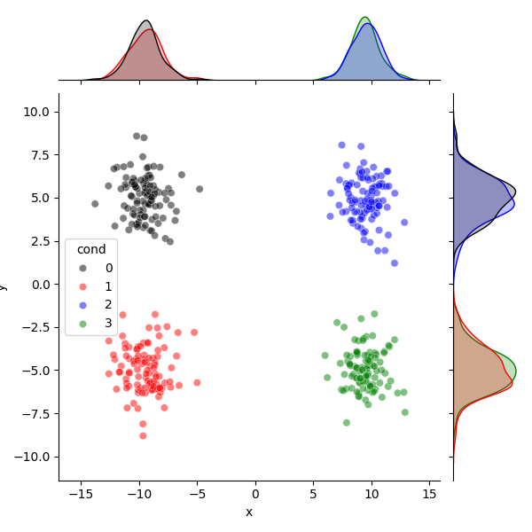
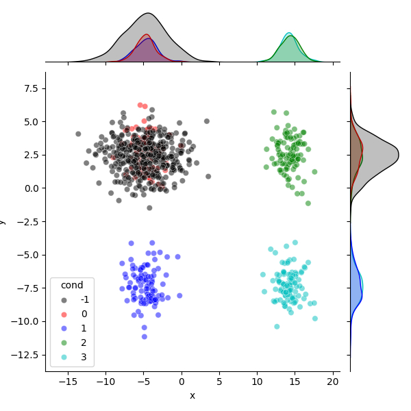

Note
Go to the end to download the full example code.
Contrastive PCA (cPCA)¶
Perform constrastive PCA (cPCA).
From: https://github.com/abidlabs/contrastive
Import¶
import matplotlib.pyplot as plt
import numpy as np
import pandas as pd
import seaborn as sns
from contrastive import CPCA
Utils¶
Let’s define some functions.
def apply_cpca(X, Y, T, alpha=2, n_components=10):
Xc = X - np.mean(X, axis=0)
C_X = (Xc.T @ Xc) / (X.shape[0] - 1)
Yc = Y - np.mean(Y, axis=0)
C_Y = (Yc.T @ Yc) / (Y.shape[0] - 1)
C = C_X - alpha * C_Y
eig = np.linalg.eig(C)
w, v = eig
eig_idx = np.argpartition(w, -n_components)[-n_components:]
eig_idx = eig_idx[np.argsort(-np.abs(w[eig_idx]))]
v_top = v[:, eig_idx]
X_reduced = Xc.dot(v_top)
Y_reduced = Yc.dot(v_top)
Tc = T - np.mean(T, axis=0)
T_reduce = Tc.dot(v_top)
return X_reduced, Y_reduced, T_reduce
Data¶
Let’s create synthetic data.
N = 400
D = 30
gap = 3
# In B, all the data pts are from the same distribution, which has
# different variances in three subspaces
B = np.zeros((N, D))
B[:, 0:10] = np.random.normal(0, 10, (N, 10))
B[:, 10:20] = np.random.normal(0, 3, (N, 10))
B[:, 20:30] = np.random.normal(0, 1, (N, 10))
B_labels = [-1] * N
# In A there are four clusters.
A = np.zeros((N, D))
A[:, 0:10] = np.random.normal(0, 10, (N, 10))
# group 1
A[0:100, 10:20] = np.random.normal(0, 1, (100, 10))
A[0:100, 20:30] = np.random.normal(0, 1, (100, 10))
# group 2
A[100:200, 10:20] = np.random.normal(0, 1, (100, 10))
A[100:200, 20:30] = np.random.normal(gap, 1, (100, 10))
# group 3
A[200:300, 10:20] = np.random.normal(2 * gap, 1, (100, 10))
A[200:300, 20:30] = np.random.normal(0, 1, (100, 10))
# group 4
A[300:400, 10:20] = np.random.normal(2 * gap, 1, (100, 10))
A[300:400, 20:30] = np.random.normal(gap, 1, (100, 10))
A_labels = [0] * 100 + [1] * 100 + [2] * 100 + [3] * 100
foreground_data, background_data = A, B
foreground_labels = A_labels
background_labels = B_labels
print(f"foreground: {foreground_data.shape}")
print(f"background: {background_data.shape}")
foreground: (400, 30)
background: (400, 30)
cPCA¶
Let’s perform cPCA with the original code.
cpca = CPCA(n_components=2, standardize=False)
cpca.fit_transform(
foreground_data, background_data, plot=True, n_alphas_to_return=4,
active_labels=foreground_labels)
projected_data, best_alphas = cpca.fit_transform(
foreground_data, background_data, plot=False, n_alphas_to_return=4,
active_labels=foreground_labels, return_alphas=True)
print(f"Embeddings: {[item.shape for item in projected_data]}")
print(f"Best alphas: {best_alphas}")

Embeddings: [(400, 2), (400, 2), (400, 2), (400, 2)]
Best alphas: [ 0. 0.66 2.73 94.27]
Let’s do the same with our simplified code.
(projected_foreground_data, projected_background_data,
projected_data) = apply_cpca(
foreground_data,
background_data,
np.concatenate((foreground_data, background_data), axis=0),
alpha=2.73,
n_components=2
)
df = pd.DataFrame.from_dict({
"x": projected_foreground_data[:, 0],
"y": projected_foreground_data[:, 1],
"cond": foreground_labels})
colors = ["k", "r", "b", "g", "c"]
sns.jointplot(
data=df, x="x", y="y", hue="cond", palette=colors[:4], alpha=0.5,
hue_order=np.sort(np.unique(df.cond.values)))
df = pd.DataFrame.from_dict({
"x": projected_data[:, 0],
"y": projected_data[:, 1],
"cond": np.concatenate((foreground_labels, background_labels))})
sns.jointplot(
data=df, x="x", y="y", hue="cond", palette=colors[:5], alpha=0.5,
hue_order=np.sort(np.unique(df.cond.values)))
plt.show()


Total running time of the script: (0 minutes 1.588 seconds)
Estimated memory usage: 121 MB